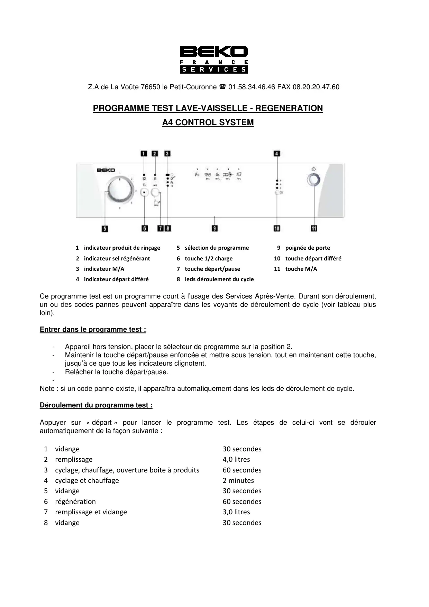
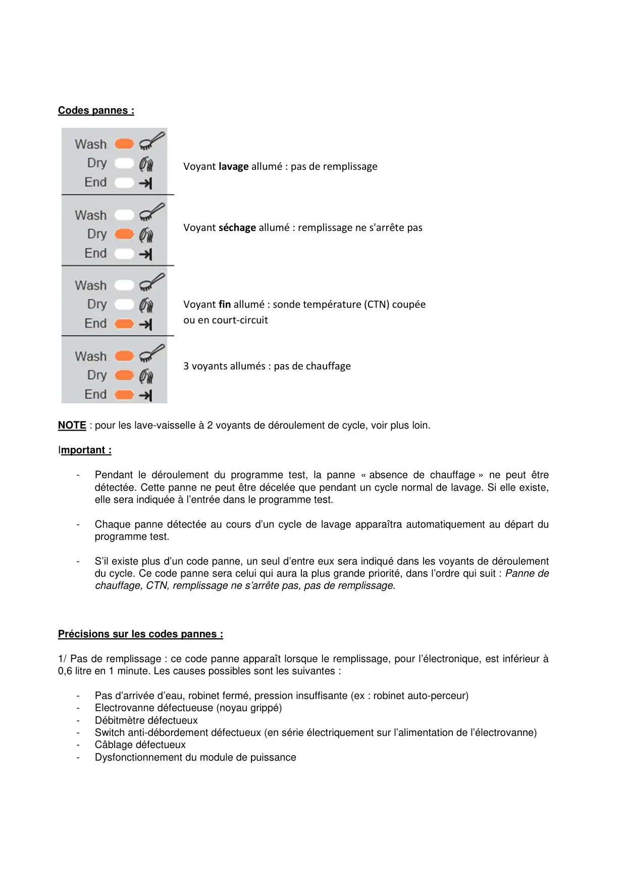
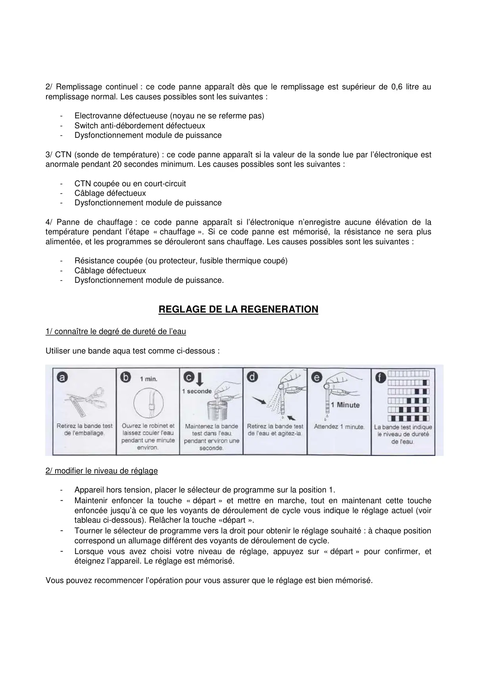
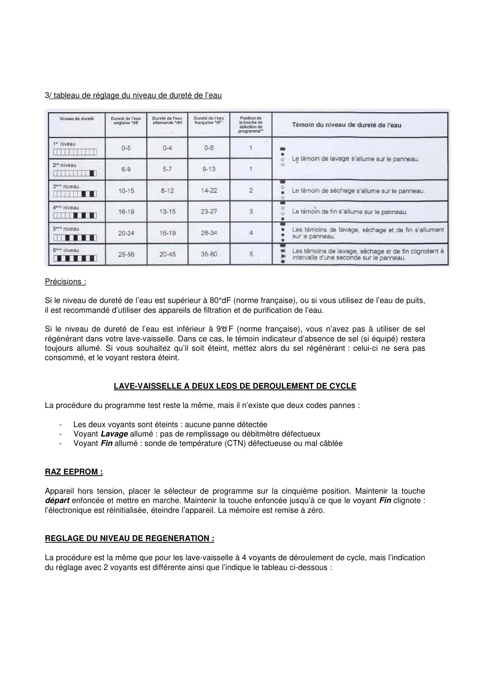
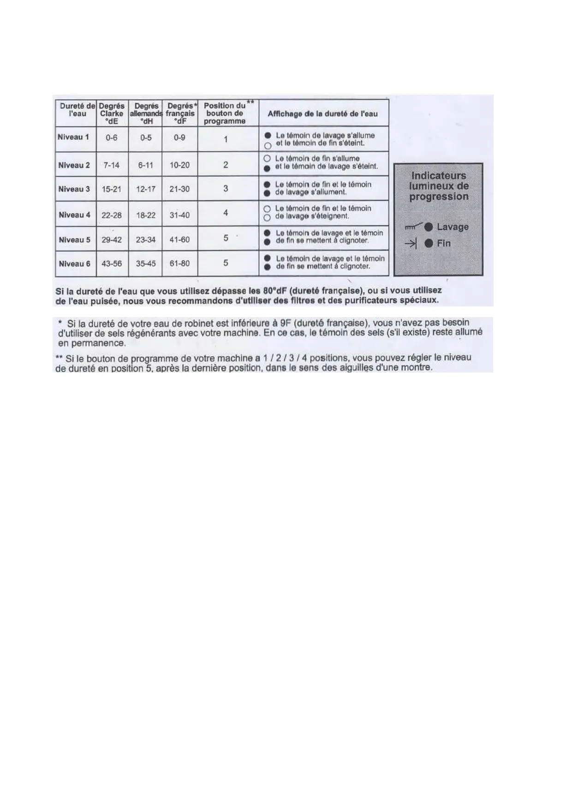

ProgrTest Réglages lave vaisselle A4 Fr

Z.A de La Voûte 76650 le Petit-Couronne 01.58.34.46.46 FAX 08.20.20.47.60PROGRAMME TEST LAVE-VAISSELLE - REGENERATIONA4 CONTROL SYSTEM1indicateur produit de rinçage5 sélection du programme9 poignée de porte2 indicateur sel régénérant6 touche 1/2 charge10 touche départ différé3 indicateur M/A7 touche départ/pause11 touche M/A4 indicateur départ différé8 leds déroulement du cycleCe programme test est un programme court à l’usage des Services Après-Vente. Durant son déroulement,un ou des codes pannes peuvent apparaître dans les voyants de déroulement de cycle (voir tableau plusloin).Entrer dans le programme test :-Appareil hors tension, placer le sélecteur de programme sur la position 2.-Maintenir la touche départ/pause enfoncée et mettre sous tension, tout en maintenant cette touche,jusqu’à ce que tous les indicateurs clignotent.-Relâcher la touche départ/pause.-Note : si un code panne existe, il apparaîtra automatiquement dans les leds de déroulement de cycle.Déroulement du programme test :Appuyer sur « départ » pour lancer le programme test. Les étapes de celui-ci vont se déroulerautomatiquement de la façon suivante :1 vidange30 secondes2 remplissage4,0 litres3 cyclage, chauffage, ouverture boîte à produits60 secondes4 cyclage et chauffage2 minutes5 vidange30 secondes6 régénération60 secondes7 remplissage et vidange3,0 litres8 vidange30 secondes
1 / 5
Codes pannes :Voyant lavage allumé : pas de remplissageVoyant séchage allumé : remplissage ne s'arrête pasVoyant fin allumé : sonde température (CTN) coupéeou en court-circuit3 voyants allumés : pas de chauffageNOTE : pour les lave-vaisselle à 2 voyants de déroulement de cycle, voir plus loin.Important :-Pendant le déroulement du programme test, la panne « absence de chauffage » ne peut êtredétectée. Cette panne ne peut être décelée que pendant un cycle normal de lavage. Si elle existe,elle sera indiquée à l’entrée dans le programme test.-Chaque panne détectée au cours d’un cycle de lavage apparaîtra automatiquement au départ duprogramme test.-S’il existe plus d’un code panne, un seul d’entre eux sera indiqué dans les voyants de déroulementdu cycle. Ce code panne sera celui qui aura la plus grande priorité, dans l’ordre qui suit : Panne dechauffage, CTN, remplissage ne s’arrête pas, pas de remplissage.Précisions sur les codes pannes :1/ Pas de remplissage : ce code panne apparaît lorsque le remplissage, pour l’électronique, est inférieur à0,6 litre en 1 minute. Les causes possibles sont les suivantes :-Pas d’arrivée d’eau, robinet fermé, pression insuffisante (ex : robinet auto-perceur)-Electrovanne défectueuse (noyau grippé)-Débitmètre défectueux-Switch anti-débordement défectueux (en série électriquement sur l’alimentation de l’électrovanne)-Câblage défectueux-Dysfonctionnement du module de puissance
2 / 5
2/ Remplissage continuel : ce code panne apparaît dès que le remplissage est supérieur de 0,6 litre auremplissage normal. Les causes possibles sont les suivantes :-Electrovanne défectueuse (noyau ne se referme pas)-Switch anti-débordement défectueux-Dysfonctionnement module de puissance3/ CTN (sonde de température) : ce code panne apparaît si la valeur de la sonde lue par l’électronique estanormale pendant 20 secondes minimum. Les causes possibles sont les suivantes :-CTN coupée ou en court-circuit-Câblage défectueux-Dysfonctionnement module de puissance4/ Panne de chauffage : ce code panne apparaît si l’électronique n’enregistre aucune élévation de latempérature pendant l’étape « chauffage ». Si ce code panne est mémorisé, la résistance ne sera plusalimentée, et les programmes se dérouleront sans chauffage. Les causes possibles sont les suivantes :-Résistance coupée (ou protecteur, fusible thermique coupé)-Câblage défectueux-Dysfonctionnement module de puissance.REGLAGE DE LA REGENERATION1/ connaître le degré de dureté de l’eauUtiliser une bande aqua test comme ci-dessous :2/ modifier le niveau de réglage-Appareil hors tension, placer le sélecteur de programme sur la position 1.-Maintenir enfoncer la touche « départ » et mettre en marche, tout en maintenant cette toucheenfoncée jusqu’à ce que les voyants de déroulement de cycle vous indique le réglage actuel (voirtableau ci-dessous). Relâcher la touche «départ ».-Tourner le sélecteur de programme vers la droit pour obtenir le réglage souhaité : à chaque positioncorrespond un allumage différent des voyants de déroulement de cycle.-Lorsque vous avez choisi votre niveau de réglage, appuyez sur « départ » pour confirmer, etéteignez l’appareil. Le réglage est mémorisé.Vous pouvez recommencer l’opération pour vous assurer que le réglage est bien mémorisé.
3 / 5
3/ tableau de réglage du niveau de dureté de l’eauPrécisions :Si le niveau de dureté de l’eau est supérieur à 80°dF (norme française), ou si vous utilisez de l’eau de puits,il est recommandé d’utiliser des appareils de filtration et de purification de l’eau.Si le niveau de dureté de l’eau est inférieur à 9°d F (norme française), vous n’avez pas à utiliser de selrégénérant dans votre lave-vaisselle. Dans ce cas, le témoin indicateur d’absence de sel (si équipé) resteratoujours allumé. Si vous souhaitez qu’il soit éteint, mettez alors du sel régénérant : celui-ci ne sera pasconsommé, et le voyant restera éteint.LAVE-VAISSELLE A DEUX LEDS DE DEROULEMENT DE CYCLELa procédure du programme test reste la même, mais il n’existe que deux codes pannes :-Les deux voyants sont éteints : aucune panne détectée-Voyant Lavage allumé : pas de remplissage ou débitmètre défectueux-Voyant Fin allumé : sonde de température (CTN) défectueuse ou mal câbléeRAZ EEPROM :Appareil hors tension, placer le sélecteur de programme sur la cinquième position. Maintenir la touchedépart enfoncée et mettre en marche. Maintenir la touche enfoncée jusqu’à ce que le voyant Fin clignote :l’électronique est réinitialisée, éteindre l’appareil. La mémoire est remise à zéro.REGLAGE DU NIVEAU DE REGENERATION :La procédure est la même que pour les lave-vaisselle à 4 voyants de déroulement de cycle, mais l’indicationdu réglage avec 2 voyants est différente ainsi que l’indique le tableau ci-dessous :
4 / 5
5 / 5